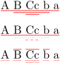
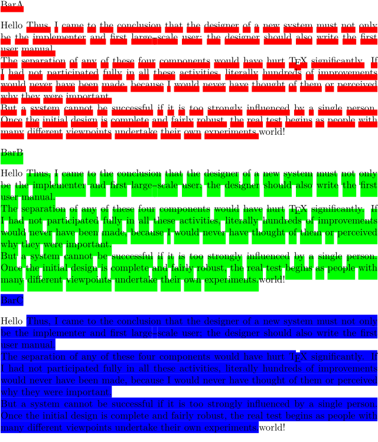
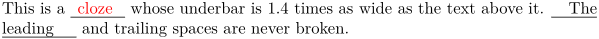
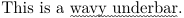

Contents
Summary
There are several variants of underlining predefined.
Instances
| \overbar | for a continuous rule above every line. Not be confused with \overbarin math mode mathovertextextensible |
| \underbar | for a continuous rule below every line. Not be confused with \underbarin math mode mathundertextextensible |
| \overstrike | for a continuous rule through every line. |
| \understrike | background color behind the line, like with a marker pen |
| \overbars | for a rule above every word. |
| \underbars | for a rule under every word. |
| \overstrikes | for a continuous rule through every word. |
| \understrikes | background color for every word. |
| \underrandom | irregular (randomized) underlining. |
| \underrandoms | irregular underlining for every word. |
| \underdash | dashed underlining. |
| \underdashes | dashed underlining for every word. |
| \underdot | dotted underlining. |
| \underdots | dotted underlining for every word. |
| \nobar | |
| \hiddenbar |
Settings instance
Description
Examples
Default style and math
-
\underbar{This is an example. $c = \sqrt{a^2 + b^2}$} \underbar{\input ward}
gives:
- internal error: convert failed
Nested bars
-
\setupbar[color=red] \underbar{A \underbar{B \underbar{Cc} b} a} \blank \underbar{A \underdot{B \underdash{Cc} b} a} \blank \underrandoms{A \overbar{B \underrandoms{Cc} b} a} \blank
gives:
- 
In MkIV only bars of the same kind are nestable (stacking), in LMTX also mixed.
Overstrike
Draw a rule through every line of the text.
-
\setuppapersize[A5] \overstrike{This is an example. $c = \sqrt{a^2 + b^2}$} \overstrike{\input ward}
- internal error: convert failed
If you are using microtypography with \setupalign[hz,hanging], then with some fonts the rule may end up off-target, above the characters instead of through them. (The problem was experienced with Linux Libertine and mkiv, and not with Latin Modern.) The workarounds are:
-
Put the overstriked text in a
\inframed[frame=off]{}. Example:
\setupalign[hanging,hz] bla bla bla \inframed[frame=off]{\overstrike{striked}} bla bla
- Turn off microtypography for the paragraph containing the overstrike. Example:
\setupalign[nothanging,nohz] bla bla bla \overstrike{striked} bla bla \setupalign[hanging,hz] bla bla bla bla bla
Various parameters demo
-
\setuppapersize[A5] \definebar[BarA][color=red,rulethickness=1.4] \BarA{BarA} \blank Hello \startbar[BarA]\input{knuth}\stopbar world! \blank \definebar[BarB][color=green,rulethickness=2.8,order=background] \BarB{BarB} \blank Hello \startbar[BarB]\input{knuth}\stopbar world! \blank \definebar[BarC][color=blue,rulethickness=2.8,order=background,offset=1.5,continue=yes] \BarC{BarC} \blank Hello \startbar[BarC]\input{knuth}\stopbar world! \blank
gives:
- 
Underbar for clozes
-
\definebar[ClozeBar][underbar][continue=yes, color=black, offset=-0.5] \starttexdefinition unexpanded Cloze #1 \startbar[ClozeBar] \scratchdimen\widthofstring{#1}\relax \zwj\kern.2\scratchdimen #1 \kern.2\scratchdimen\zwj \stopbar \stoptexdefinition \startTEXpage This is a \Cloze{\color[red]{cloze}} whose underbar is 1.4 times as wide as the text above it. \Cloze{The leading} and trailing spaces are never broken. \stopTEXpage
gives:
- 
Wavy underbar using MetaPost
-
\startuseMPgraphic{rules:under:wavy} mo := RuleThickness*10; wav := 1.5*RuleThickness; path p; p := (wav, RuleDepth - wav){dir 45} for i := 1 upto RuleWidth/mo: ... (mo * i - 2*wav,RuleDepth + wav) ... {dir -45}(mo * i,RuleDepth - wav) endfor; draw p shifted (0,RuleFactor*RuleOffset) withpen pencircle scaled 1.5RuleThickness withcolor RuleColor ; setbounds currentpicture to unitsquare xysized(RuleWidth,RuleHeight) ; \stopuseMPgraphic \definebar[underwavy][undergraphic][mp=rules:under:wavy] This is a \underwavy{wavy underbar}.
gives:
- 
Notes
See also
- \definebar
- \setupbar
- node-rul.mkiv
- rules-mkiv.pdf Everything about rules (lines)
Help from ConTeXt-Mailinglist/Forum
All issues with:
- \overbar on the mailing list (all results)
- \overbar on the mailing list (subject only)
- \overbar on stack exchange
- \overbar in ConTeXt's source
- \underbar on the mailing list (all results)
- \underbar on the mailing list (subject only)
- \underbar on stack exchange
- \underbar in ConTeXt's source
- \overstrike on the mailing list (all results)
- \overstrike on the mailing list (subject only)
- \overstrike on stack exchange
- \overstrike in ConTeXt's source
- \understrike on the mailing list (all results)
- \understrike on the mailing list (subject only)
- \understrike on stack exchange
- \understrike in ConTeXt's source
- \overbars on the mailing list (all results)
- \overbars on the mailing list (subject only)
- \overbars on stack exchange
- \overbars in ConTeXt's source
- \underbars on the mailing list (all results)
- \underbars on the mailing list (subject only)
- \underbars on stack exchange
- \underbars in ConTeXt's source
- \overstrikes on the mailing list (all results)
- \overstrikes on the mailing list (subject only)
- \overstrikes on stack exchange
- \overstrikes in ConTeXt's source
- \understrikes on the mailing list (all results)
- \understrikes on the mailing list (subject only)
- \understrikes on stack exchange
- \understrikes in ConTeXt's source
- \underrandom on the mailing list (all results)
- \underrandom on the mailing list (subject only)
- \underrandom on stack exchange
- \underrandom in ConTeXt's source
- \underrandoms on the mailing list (all results)
- \underrandoms on the mailing list (subject only)
- \underrandoms on stack exchange
- \underrandoms in ConTeXt's source
- \underdash on the mailing list (all results)
- \underdash on the mailing list (subject only)
- \underdash on stack exchange
- \underdash in ConTeXt's source
- \underdashes on the mailing list (all results)
- \underdashes on the mailing list (subject only)
- \underdashes on stack exchange
- \underdashes in ConTeXt's source
- \underdot on the mailing list (all results)
- \underdot on the mailing list (subject only)
- \underdot on stack exchange
- \underdot in ConTeXt's source
- \underdots on the mailing list (all results)
- \underdots on the mailing list (subject only)
- \underdots on stack exchange
- \underdots in ConTeXt's source